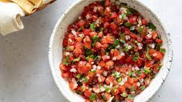

Description:
Pico de gallo is a wonderfully fresh and satisfying salsa. Eat it with chips, or use it to top your favorite tacos and salads.
Due to the simplicity of this recipe I urge you to find the nicest ingredients possible.
Ingredients:
- 2 Red tomatoes, Diced
- 1 Large Red Onion, Diced
- 2 Jalapenos, Diced small
- 1 Bunch Cilantro, Minced
- 1 Lime, Halved
- Kosher Salt
Steps:
- Place Tomatoes, Onion, Jalapenos, and Cilantro in a large bowl and mix until evenly dispersed.
- Squeeze both lime halves over the salsa, then add 1 Tbsp of salt.
- Taste the salsa and add more salt if necessary.
Return to top
Return to Main Page